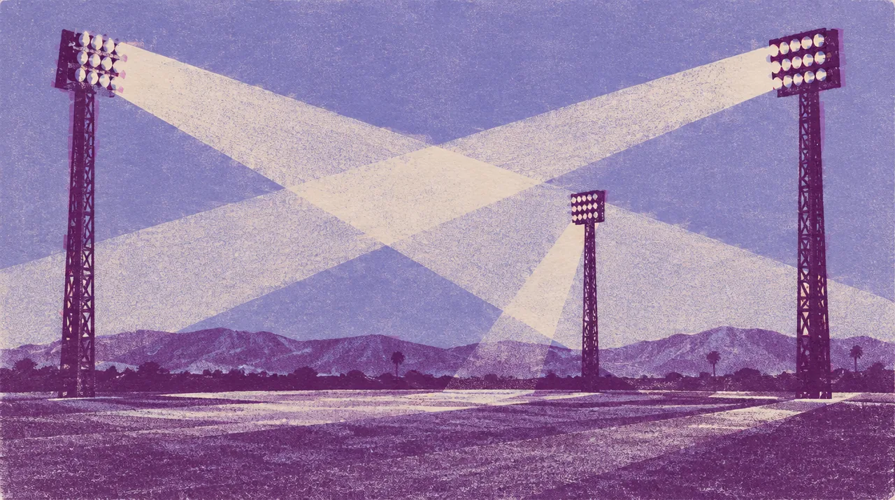

MUSIC · OCT 09 TO 11 · San Diego
NITEHARTS
One must-see each. One discovery none of us came for.
Same city. Bigger feeling. Find each other again.
16days out
- When
- Oct 9 to Oct 11, 2026
- Where
- Snapdragon Stadium grounds, San Diego · Directions
- Light
- After dark
Notes to the crew
Before this night
3 real photographs from Gordon's album that lead here.
{kind=link}
{kind=link}
{kind=link}
Dig into the sound and story
4 short chapters. Open the ones that call to you.
TWO ARTISTSISOxo + Knock2 = ISOKNOCK.
The 4EVR release credits both artists together under ISOKNOCK. “SMACK TALK” brings RL Grime into that conversation; other tracks include Bantu, London Mars, Araya, Sur Back and cade clair. Digging into those credits turns one name into a constellation.
THE HOMEGROUNDFrom a set to a world.
The official SD4EVR full set is a door into the San Diego chapter. NiteHarts expands the artists’ curation into a three-day festival, with ISOxo, Knock2 and ISOKNOCK each appearing on the announced 2026 lineup.
THE CURATORSA festival can be a mixtape.
The 2026 bill reaches across Porter Robinson, RL Grime, Flava D, Hamdi, Jane Remover and more. Those names offer different doors into the curators’ taste. A festival gets personal when someone in the group becomes the guide to a sound the others have not met.
OUR HISTORYAcross the crowd, back to each other.
At NiteHarts on October 11, 2025, Brennan and I were in different parts of the crowd. We found each other again. I want to carry that instinct into another San Diego weekend: explore, then reconnect.
Before we go
Artist recordings open on their own players. Not a promised setlist.
Same crew, other nights
Swipe the picture, or use the arrow keys, for the next night.